Lección 1: Introducción
Lo primero es seleccionar una nueva presentación en blanco. Abre una nueva diapositiva y añade un título.
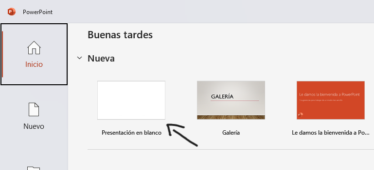
También puedes seleccionar una de las plantillas que ya te ofrecen.
La interfaz de powerpoint consiste en la pantalla central o área de trabajo, la cual se conoce como diapositiva y es el contenido que se va a mostrar en la presentación. Por el lado izquierdo de la pantalla se ubican el número de diapositivas, la esquina superior izquierda es la barra de acceso rápido, donde se encuentran opciones fundamentales como guardar tu presentación, deshacer y rehacer una acción. Por último, la cinta de opciones, la cual contiene pestañas organizadas por funciones como INICIO, INSERTAR, DISEÑO,entre otros:
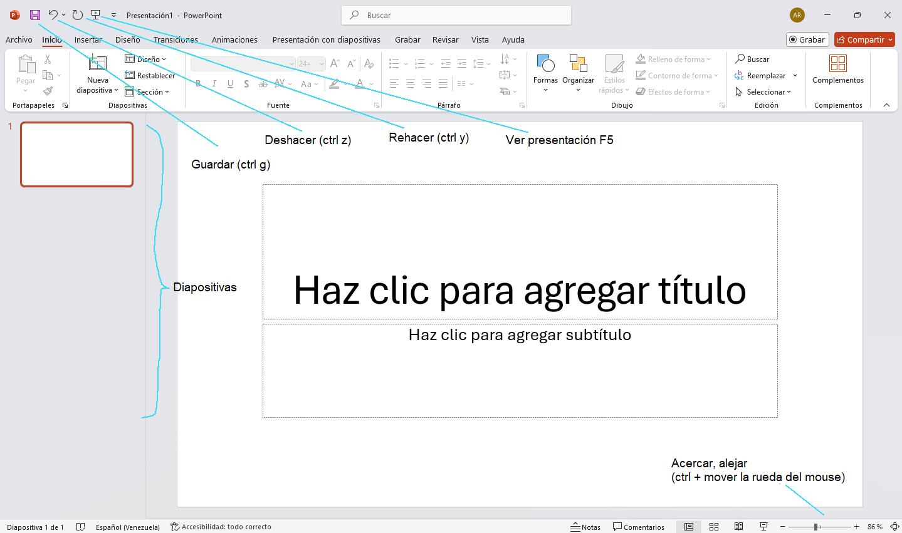
Lección 2: Añadir Contenido y pestañas principales
Ahora vamos a ver sobre la pestaña INICIO
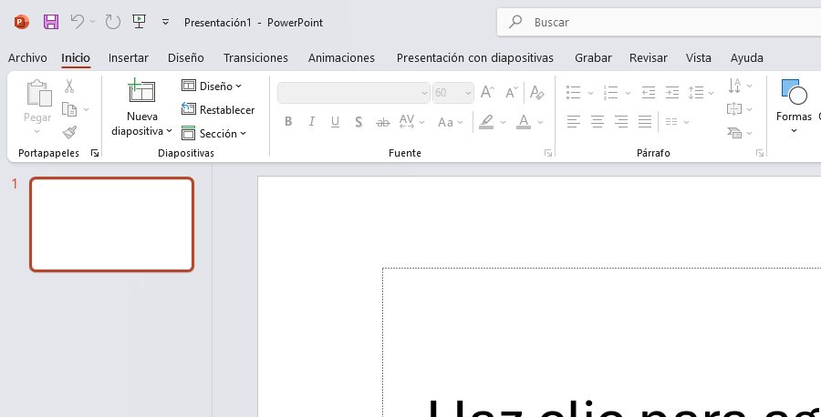
Esta sección es la mas utilizada ya que tiene las herramientas más básicas como copiar, pegar, cortar, etc
La sección “diapositivas” donde se encuentra las opciones de elegir una nueva diapositiva en blanco o con temas predetermindos.
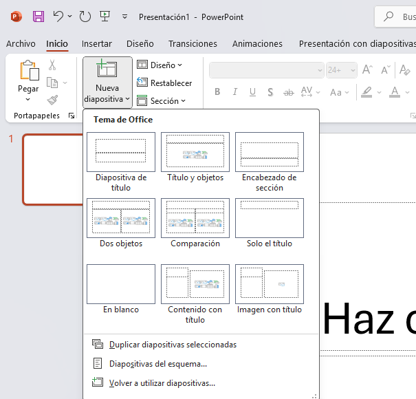
La sección “Fuente” para cambiar el tipo y el tamaño de la letra. La sección “Párrafo” para añadir viñetas, definir el interlineado o la posición del texto (centrado, a la izquierda, a la derecha, o justificado).
La pestaña INSERTAR:
Es donde se añaden las imágenes, graficas, tablas, formas, cuadros de texto, etc.
Puedes añadir una imagen buscándola en tu navegador o en tu mismo ordenador, haciendo lo mismo que cuando copias un texto. Buscar la imagen copiarla (ctrl c) y pegarla (ctrl v)
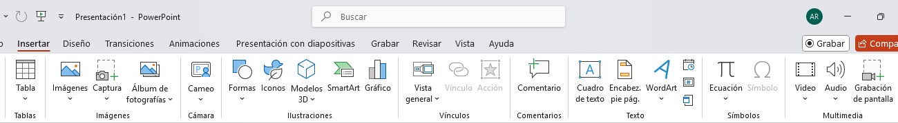
Al hacer clic en una imagen se mostrará al lado de la pestaña Ayuda otra pestaña llamado formato de imagen
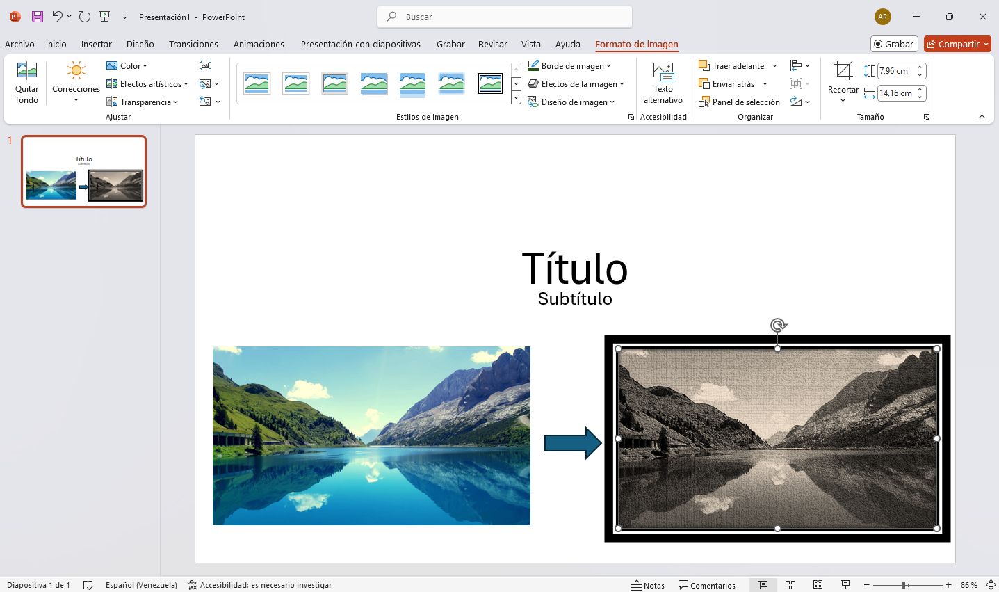
Aquí dispones de varias herramientas para modificar la imagen, como modificar su color, recortar, aumentar o disminuir el brillo y el contraste de la imagen, añadirle efectos artísticos, darle estilos, incluso puedes personalizarla a tu gusto utilizando la opción efectos de la imagen.
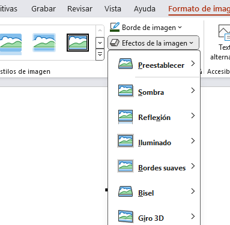
También puedes modificar los cuadros de textos al hacer clic en uno se mostrará la pestaña formato de forma
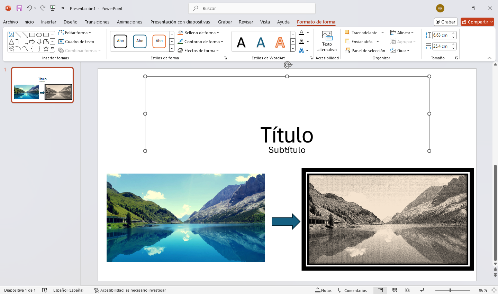
Aquí puedes estilizar el texto y el cuadro de texto con las plantillas que ya vienen incluidas en el programa, o puedes hacerlas a tu preferencia.
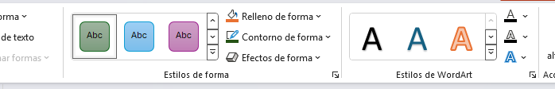
Aquí una demostración del cuadro de texto
Lección 3: diseño de presentaciones
Por último, explicar las pestañas DISEÑO, TRANSICIONES y ANIMACIONES:
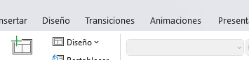
Diseño: te ofrece varias plantillas para darle una apariencia llamativa a tu presentación, éstas añaden un fondo a las diapositivas y modifican el tipo de letra y el color.
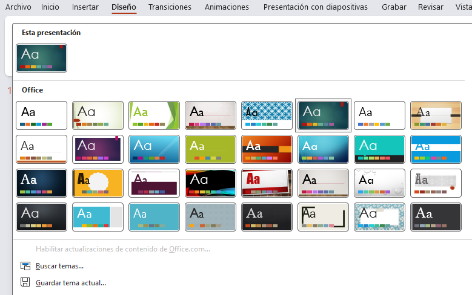
También puedes personalizar tu diapositiva como gustes, pero si quieres un diseño simple y elegante puedes optar por usar una de estas plantillas.
Transiciones: es bastante simple, lo que hace es añadir animaciones al pasar de una diapositiva a otra.
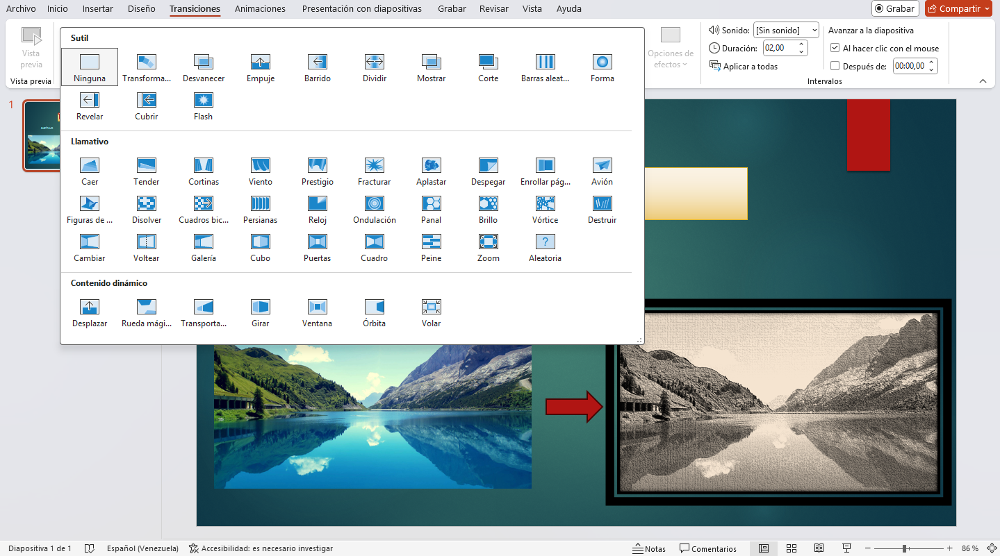
Animaciones: añade efectos especiales a las imágenes y a los cuadros de texto. Puedes hacer que todas las imágenes aparezcan de una vez o escoger cuales aparecen primero y las que le siguen.
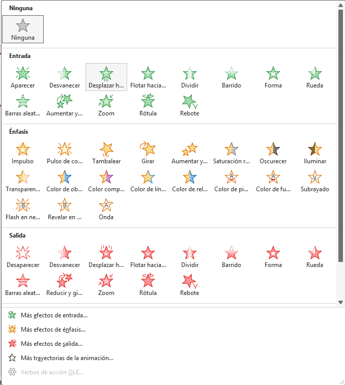
Importante: las transiciones solo se aplican a las diapositivas y las animaciones a las imágenes y cuadros de texto.